01 Võ Văn Kiệt · Biển Mỹ Khê
Căn hộ thương hiệuNobu Residences DanangCăn hộ thương hiệu Nobu Residences đầu tiên tại Đông Nam Á
Nobu Residences Danang – tòa tháp 43 tầng, cao 186 m tại 01 Võ Văn Kiệt, Đà Nẵng, giao lộ Võ Văn Kiệt – Võ Nguyên Giáp, mặt tiền biển Mỹ Khê. VCRE phát triển, Nobu Hospitality quản lý và vận hành.
Đăng ký tham quan Sales Gallery- 186mChiều cao
- 43Tầng
- 264Căn hộ
- 186Phòng khách sạn
Tòa tháp bên hàng dừa ven biển Mỹ Khê · hình ảnh minh họa
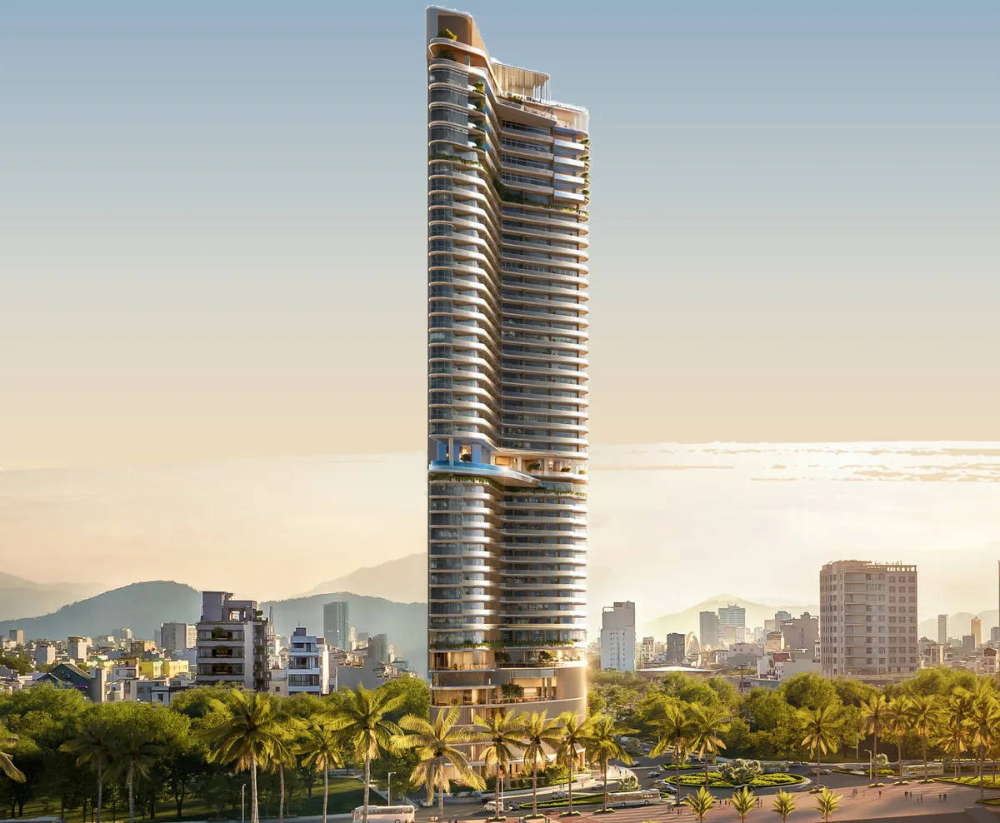
Giới thiệu Nobu Danang
Nobu Danang là tòa tháp 43 tầng, cao 186 m, gồm nhà hàng – khách sạn – căn hộ du lịch mang thương hiệu Nobu. Tòa tháp nằm tại số 01 Võ Văn Kiệt, ngay giao lộ Võ Văn Kiệt – Võ Nguyên Giáp, mặt tiền biển Mỹ Khê, TP. Đà Nẵng.
Dự án do VCRE (hệ sinh thái Phoenix) phát triển, Nobu Hospitality quản lý và vận hành.
Nobu chọn Đà Nẵng – thành phố biển đáng sống của Việt Nam – để ghi dấu ấn. Nobu Residences Danang mang đến bộ sưu tập giới hạn 264 căn hộ du lịch hàng hiệu, nơi lời chào đón vượt lên trên một câu xin chào, cùng hành trình ẩm thực Nobu dành cho thực khách trong nước và quốc tế.
Nhà hàng·Khách sạn·Căn hộ du lịch
Đăng ký nhận thông tin bộ sưu tập Nobu ResidencesSở hữu phong cách định danh của riêng bạn
Sáu giá trị làm nên Nobu Residences Danang – căn hộ thương hiệu Nobu đầu tiên của Đông Nam Á, bên bờ biển Mỹ Khê.
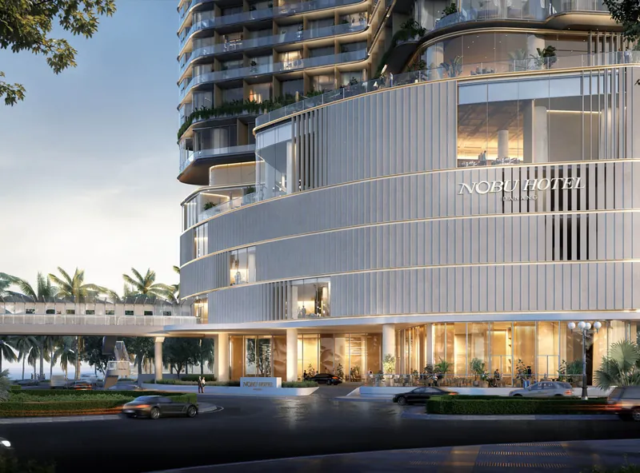
01Dự án Nobu Residences đầu tiên tại Đông Nam ÁCăn hộ mang thương hiệu Nobu Residences đầu tiên của khu vực, tại thành phố biển Đà Nẵng.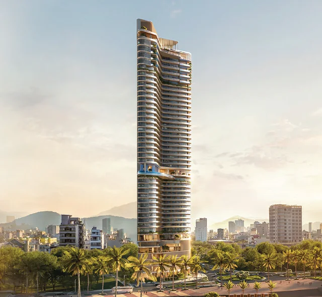
02Vị trí di sản hiếm hoi cuối cùngMặt tiền biển Mỹ Khê, ngay giao lộ Võ Văn Kiệt – Võ Nguyên Giáp.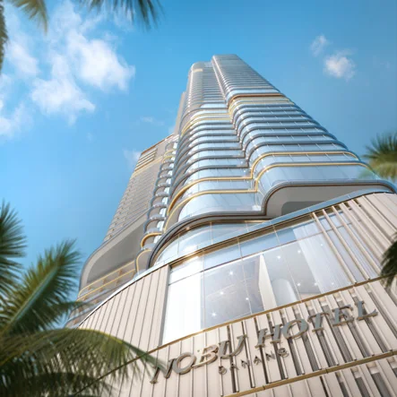
03Tòa nhà biểu tượng Đà NẵngTòa tháp biểu tượng cao 186 m, 43 tầng trên trục biển Đà Nẵng.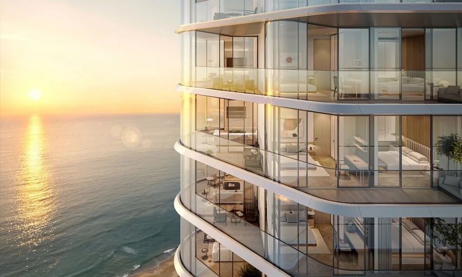
04Bộ sưu tập giới hạn định danh Nobu ResidencesBộ sưu tập giới hạn 264 căn hộ du lịch mang thương hiệu Nobu Residences.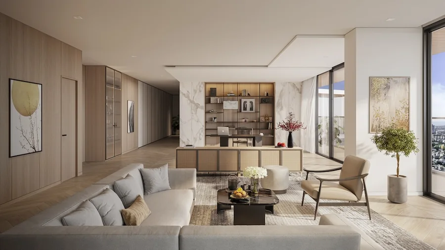
05Thương hiệu vận hành danh tiếng toàn cầu bởi triết lý Nhật BảnVận hành bởi Nobu Hospitality, theo triết lý dịch vụ Nhật Bản.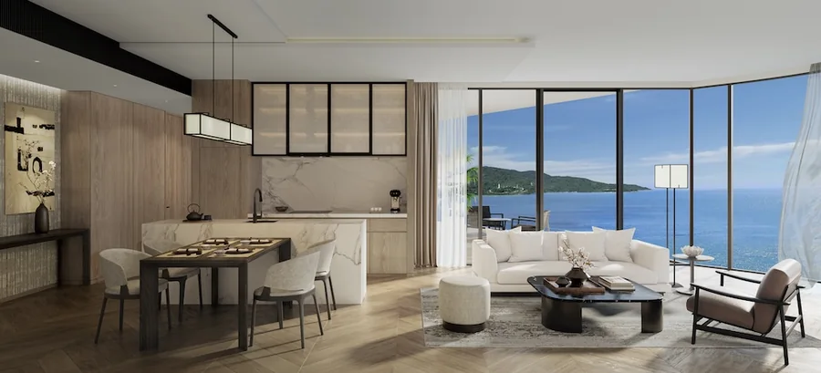
06Giá trị tài sản bền vững theo thời gianTài sản mang thương hiệu Nobu, đặt tại mặt tiền biển Mỹ Khê của Đà Nẵng.
Thông tin tổng quan dự án Nobu Residences Danang
Một tòa tháp, ba chức năng: nhà hàng Nobu, khách sạn 186 phòng và 264 căn hộ du lịch, trên khu đất 3.000 m² mặt tiền biển Mỹ Khê.
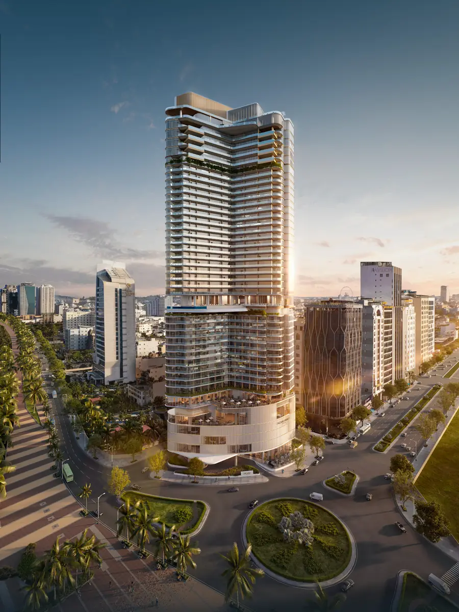
| Chủ đầu tư | Công ty Cổ phần Bất động sản Circle Point |
|---|---|
| Phát triển bởi | VCRE – Công ty Bất động sản Bản ViệtHệ sinh thái Phoenix |
| Quản lý & vận hành | Nobu Hospitality |
| Địa chỉ | Số 01 Võ Văn Kiệt, phường An Hải, TP. Đà NẵngGiao lộ Võ Văn Kiệt – Võ Nguyên Giáp, mặt tiền biển Mỹ Khê |
| Diện tích đất | 3.000 m² |
| Chức năng | Nhà hàng, khách sạn, căn hộ du lịch |
| Chiều cao | 186 m / 43 tầng2 tầng hầm |
| Khách sạn | 186 phòng |
| Căn hộ du lịch | 264 căn |
| Tổng thầu | NewteconsTheo website dự án của chủ đầu tư |
| Tiến độ | Đang thi côngChủ đầu tư cập nhật tiến độ công trường hằng tháng (bản gần nhất: 09/2026) |
| Thông tin khác | Loại căn, diện tích, pháp lý, thời điểm bàn giao: đang cập nhật theo công bố của chủ đầu tư |
Vị trí di sản Giao lộ Võ Văn Kiệt – Võ Nguyên Giáp, mặt tiền trực diện biển Mỹ Khê.
Tọa lạc tại giao lộ biểu tượng Võ Văn Kiệt – Võ Nguyên Giáp với mặt tiền trực diện biển Mỹ Khê, Nobu Residences Danang là một trong những kiệt tác kiến trúc biểu tượng của thành phố Đà Nẵng.
- 4,1kmTrung tâm Hành chính Đà Nẵng
- 5,1kmSân bay quốc tế Đà Nẵng
- 5,7kmCung thể thao Tiên Sơn, Sun Wheel
- 9,8kmNgũ Hành Sơn
- 18,5kmBán đảo Sơn Trà
- 26,5kmPhố cổ Hội An
- 46,9kmBà Nà Hills
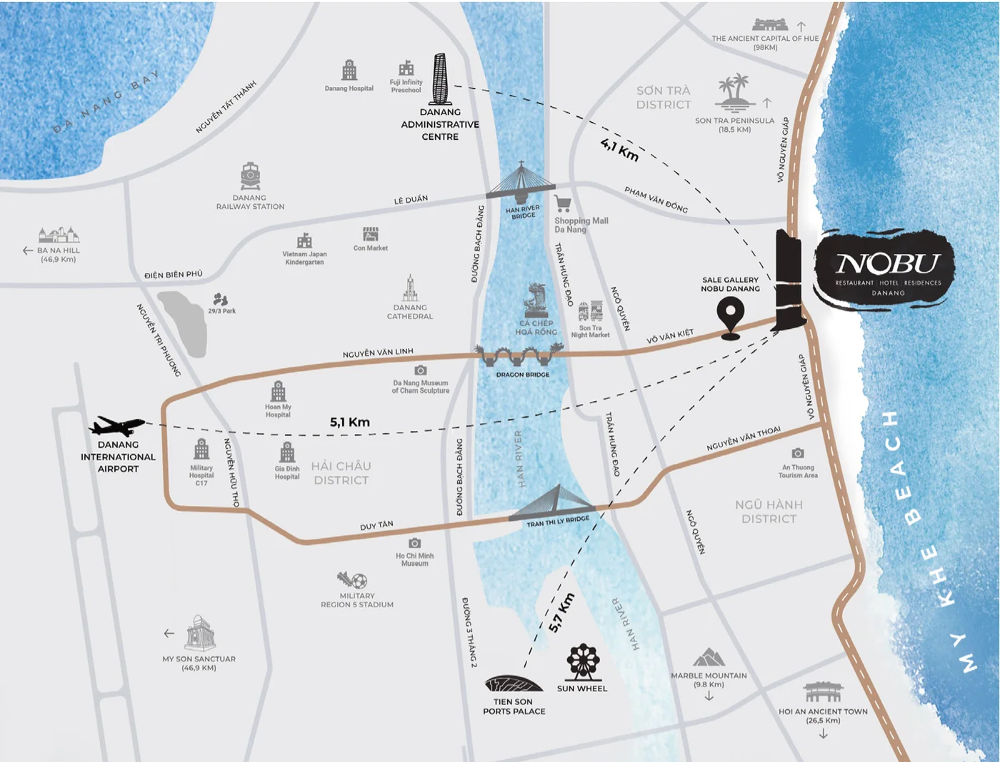
Lân cận
- Biển Mỹ Khê
- Cầu Rồng
- Cầu Sông Hàn
- Chợ đêm Sơn Trà
- Bảo tàng Điêu khắc Chăm
Khoảng cách đo theo bản đồ factsheet của chủ đầu tư, mang tính tham khảo.
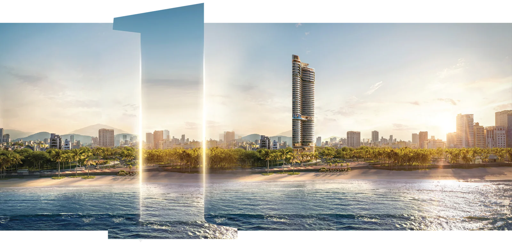
Tiện ích chuẩn Nobu
Từ nhà hàng Nobu đến bar trên không Tsukimidai, hồ bơi nước ấm Katamochi và spa – trải nghiệm của một khách sạn Nobu ngay trong tòa nhà bạn sở hữu.
- 01Nhà hàng Nobu
- 02Nhà hàng Taste of Asia
- 03Nhà hàng – bar trên không Tsukimidai
- 04Hồ bơi nước ấm Katamochi
- 05Quầy bar bên hồ bơi
- 06Trung tâm spa & chăm sóc sức khỏe
- 07Phòng tập thể thao trên không
- 08Sảnh hội nghị
- 09Sảnh đón sang trọng
- 10Khu vui chơi trẻ em
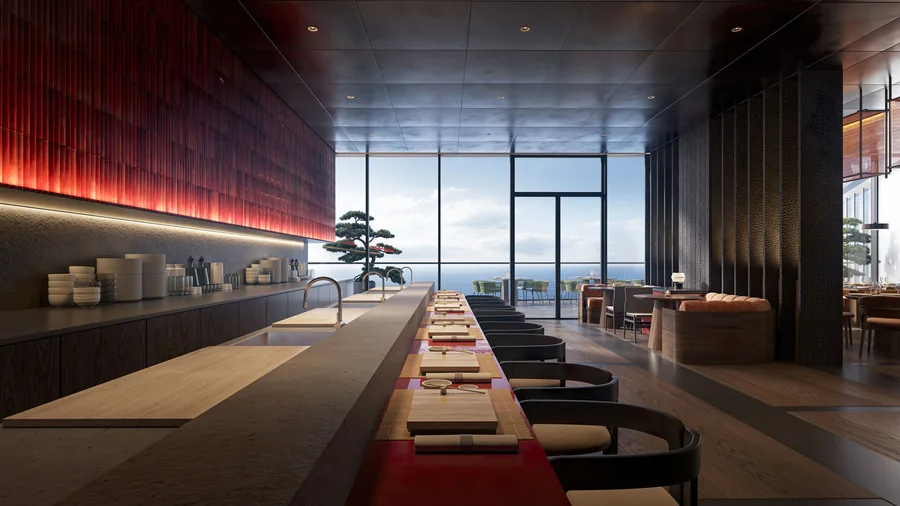
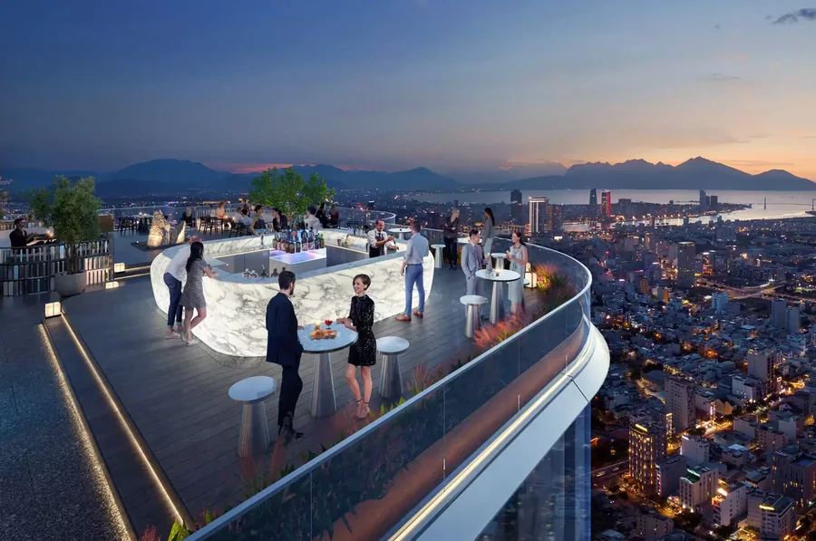
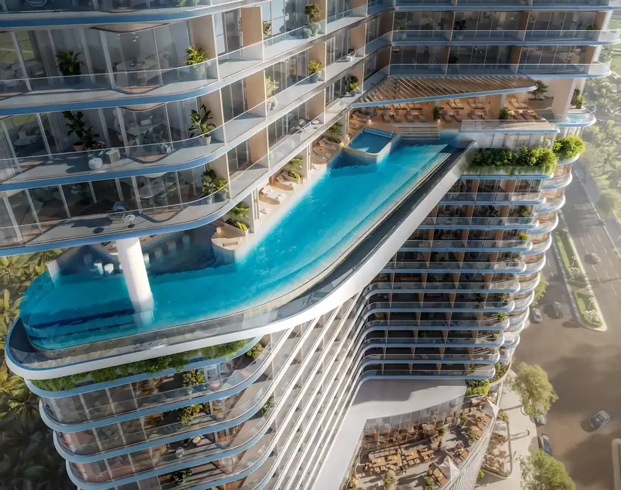
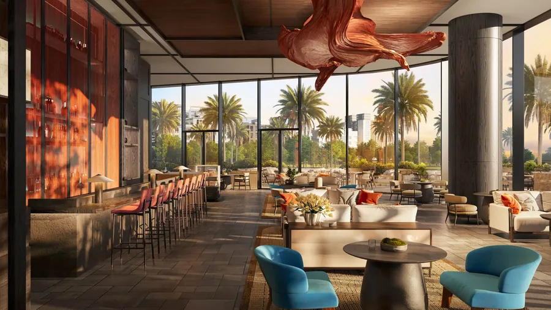
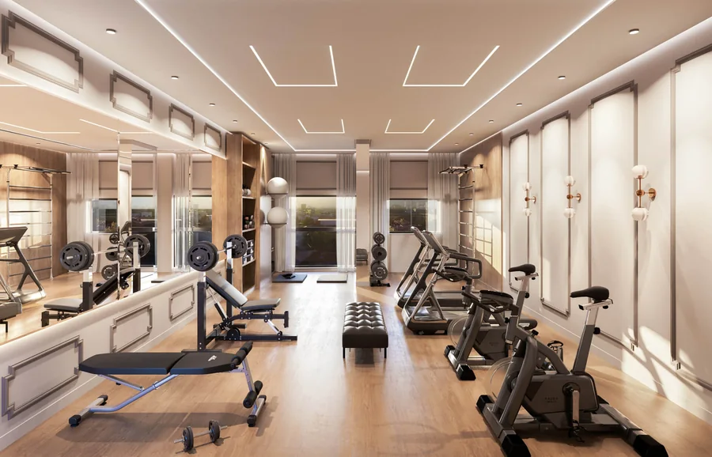
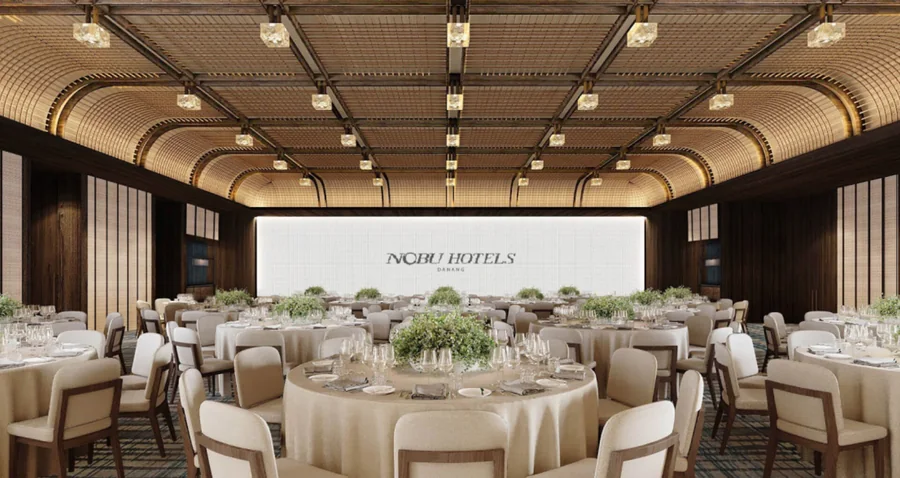
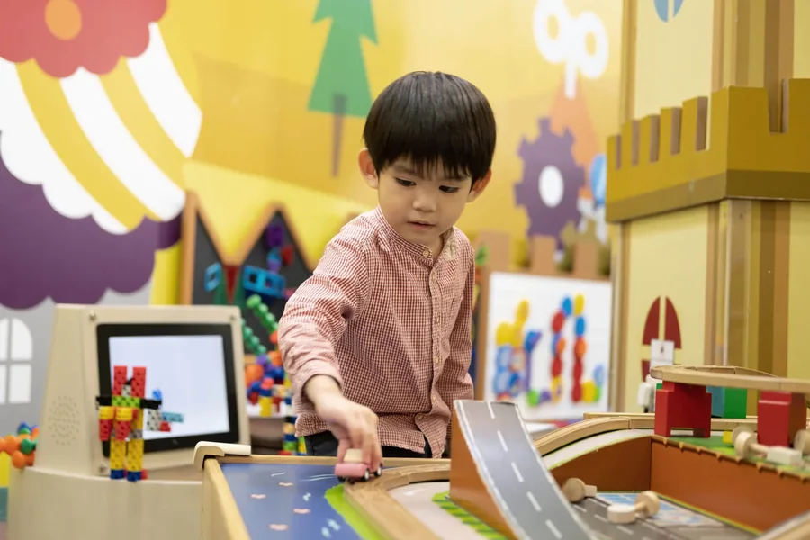
Hình ảnh tiện ích theo tài liệu chủ đầu tư, mang tính chất minh họa.
Quản lý và vận hành bởi Nobu Hospitality
Nobu Hospitality – thương hiệu nhà hàng, khách sạn, căn hộ hàng hiệu – được Robb Report vinh danh là một trong 25 thương hiệu sáng tạo nhất toàn cầu.
Với triết lý kinh doanh chú trọng chất lượng dịch vụ, hình ảnh và uy tín, Nobu Hospitality cung cấp dịch vụ quản lý khách sạn, nhà hàng và khu dân cư cao cấp, mang đến những trải nghiệm độc đáo và tinh tế cho khách hàng trên khắp thế giới.
Thương hiệu được sáng lập bởi bộ ba: đầu bếp nổi tiếng thế giới Nobu Matsuhisa, diễn viên Robert De Niro và nhà sản xuất Meir Teper, trở thành biểu tượng của phong cách sống xa hoa và tinh tế toàn cầu.
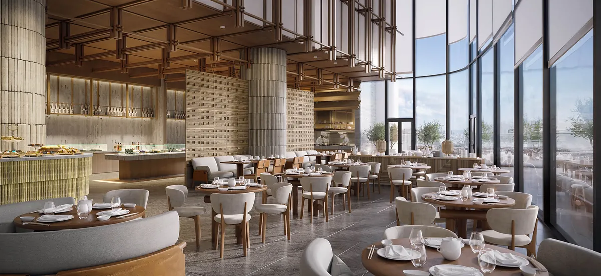
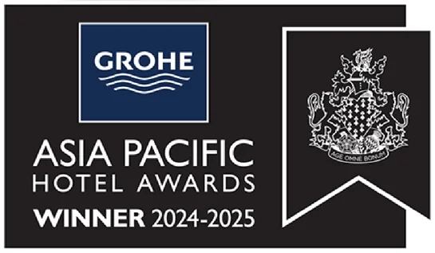
- Best New Hotel Construction & Design Vietnam
- Best Hotel Architecture Vietnam
Điều khoản khước từNobu Residences Danang không được sở hữu, phát triển hoặc bán bởi Nobu Hospitality hoặc các công ty liên kết (Nobu Hotels). Nhà phát triển sử dụng thương hiệu và tên thương mại của Nobu Hospitality theo giấy phép của Nobu Hospitality.
Phát triển bởi VCRE – Đội ngũ tư vấn quốc tế
VCRE – Công ty Bất động sản Bản Việt
VCRE thuộc hệ sinh thái của tập đoàn Phoenix, là một trong những nhà phát triển “bất động sản boutique” hàng đầu tại Việt Nam.
VCRE hướng đến kiến tạo những tài sản mang tầm quốc tế, thay đổi diện mạo của bất động sản nhà ở, nghỉ dưỡng và thương mại; tạo nên những không gian không chỉ cho mục đích đầu tư mà còn là những điểm đến đáng sống đầy biểu tượng.
Chủ đầu tưCông ty Cổ phần Bất động sản Circle Point
- PlanetworksThiết kế kiến trúc · Mỹ
- MeinhardtThiết kế mặt dựng · Thái Lan
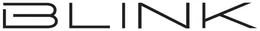
BlinkThiết kế nội thất · Thái Lan- ACONSThiết kế kết cấu · Việt Nam
- WSPThiết kế cơ điện · Hồng Kông
- SdiThiết kế bếp · Malaysia, Mỹ
- SocialightThiết kế chiếu sáng · Singapore
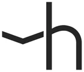
Thiết kế địa phươngKiến trúc địa phương · Việt Nam
Bộ sưu tập Nobu Residences
264 căn hộ du lịch – mỗi căn là một phần của bộ sưu tập giới hạn mang tên Nobu, thiết kế cho tầm nhìn biển và nhịp sống thành phố.
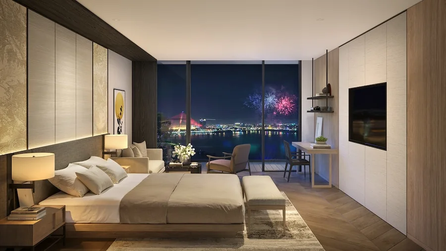
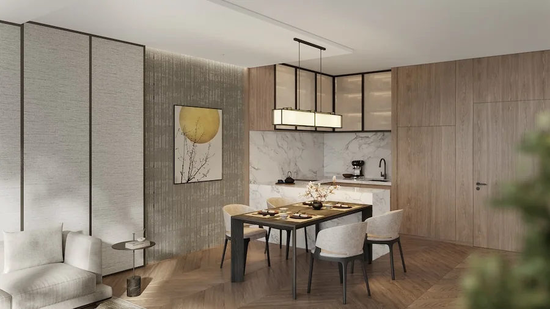
Loại căn, diện tích, mặt bằng tầng, layout và tiêu chuẩn bàn giao đang cập nhật theo công bố của chủ đầu tư. Chuyên viên ERA gửi bạn ngay khi có tài liệu chính thức.
Những điều nên biết về Nobu Residences Danang
Nobu Residences Danang ở đâu?
Nobu Residences Danang tọa lạc tại số 01 Võ Văn Kiệt, phường An Hải, TP. Đà Nẵng, ngay giao lộ Võ Văn Kiệt – Võ Nguyên Giáp, mặt tiền trực diện biển Mỹ Khê.
Ai phát triển và vận hành Nobu Residences Danang?
Chủ đầu tư là Công ty Cổ phần Bất động sản Circle Point. VCRE – Công ty Bất động sản Bản Việt, thuộc hệ sinh thái Phoenix – phát triển dự án; Nobu Hospitality quản lý và vận hành. Nhà phát triển sử dụng thương hiệu Nobu theo giấy phép của Nobu Hospitality. ERA Vietnam là đại lý phân phối.
Nobu Danang có quy mô như thế nào?
Nobu Danang là tòa tháp 43 tầng, cao 186 m, 2 tầng hầm trên khu đất 3.000 m², gồm nhà hàng, khách sạn 186 phòng và 264 căn hộ du lịch mang thương hiệu Nobu Residences.
Tiện ích Nobu Residences Danang gồm những gì?
Tòa tháp có nhà hàng Nobu, nhà hàng Taste of Asia, nhà hàng – bar trên không Tsukimidai, hồ bơi nước ấm Katamochi, quầy bar bên hồ bơi, trung tâm spa và chăm sóc sức khỏe, phòng tập thể thao trên không, sảnh hội nghị, sảnh đón và khu vui chơi trẻ em.
Từ Nobu Danang đến sân bay và Hội An bao xa?
Theo bản đồ của chủ đầu tư: 4,1 km đến Trung tâm Hành chính Đà Nẵng, 5,1 km đến sân bay quốc tế Đà Nẵng, 9,8 km đến Ngũ Hành Sơn, 18,5 km đến bán đảo Sơn Trà, 26,5 km đến phố cổ Hội An và 46,9 km đến Bà Nà Hills.
Căn hộ Nobu Residences Danang có điểm gì đặc biệt?
Theo chủ đầu tư, căn hộ có ban công rộng 1,5 m, thiết kế ban công đôi, tùy chọn căn dual-key, phong cách Japandi và trần cao đến khoảng 3 m; 8 căn sky villa và penthouse chọn lọc có hồ bơi nước ấm trên không.
Giá bán, loại căn và thời điểm bàn giao Nobu Residences Danang?
Loại căn, diện tích, giá bán, pháp lý và thời điểm bàn giao đang cập nhật theo công bố chính thức của chủ đầu tư. Chuyên viên ERA Vietnam sẽ gửi bảng giá, mặt bằng căn và chính sách bán hàng khi có tài liệu chính thức.
Có thể tham quan Sales Gallery Nobu Danang ở đâu?
Sales Gallery Nobu Danang nằm trên trục Võ Văn Kiệt, phường An Hải, TP. Đà Nẵng. Bạn có thể hẹn lịch tham quan cùng chuyên viên ERA Vietnam.
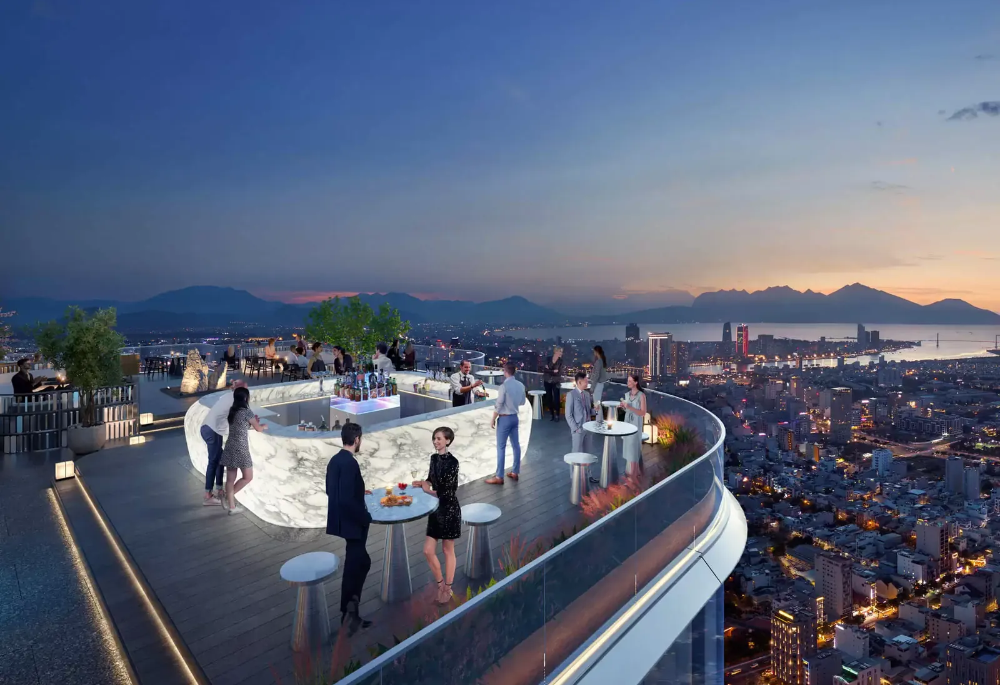
Đăng ký tham quan Sales Gallery Nobu Danang
Nhận thông tin bộ sưu tập Nobu Residences, mặt bằng căn và chính sách bán hàng từ ERA Vietnam.
- Thông tin bộ sưu tập 264 căn hộ Nobu Residences
- Mặt bằng căn và chính sách bán hàng khi chủ đầu tư công bố
- Lịch tham quan Sales Gallery Nobu Danang
Chuyên viên ERA gọi lại gửi thông tin bộ sưu tập và hẹn lịch tham quan Sales Gallery cho anh/chị.
Hoặc gọi ngay 094.1125.000